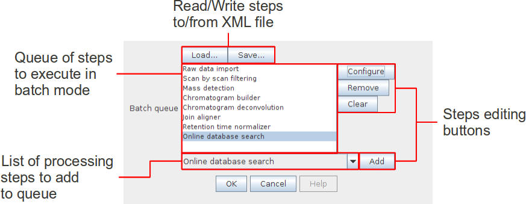

MZmine has the ability to run multiple data processing methods in batch mode. The following figure shows the "Batch mode setup" dialog, where the user can setup a queue of batch steps. When a new step is added to the queue its parameter setup dialog is shown. The "Configure" button allows the user to modify a step's parameter settings. The "Remove" button deletes a step from the queue, and the "Clear" button removes all steps. The "Load..." and "Save..." buttons make it possible to read and write batch steps to XML files.

The first step of a batch queue is performed on those raw data files and/or peak lists selected by the user. The remaining steps are performed on the results produced by each preceding step. For example, if the first step of the batch queue is Chromatogram builder, it will produce peak lists as a result. If the following step were Peak list deconvolution then it will be performed on the peak lists produced by the preceding Chromatogram builder step.